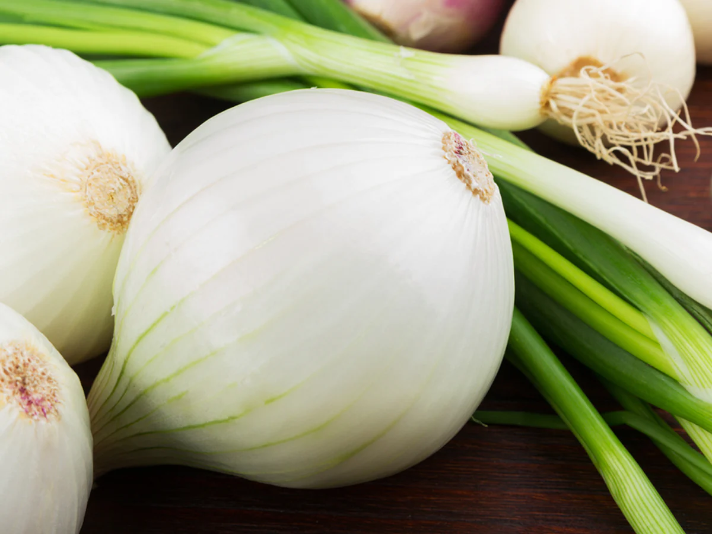
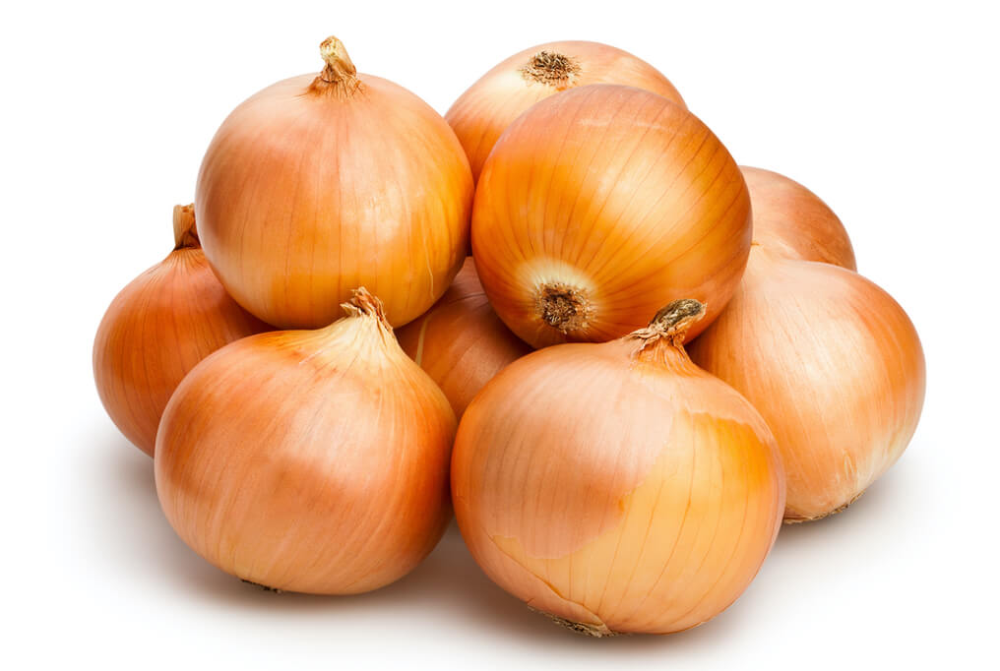
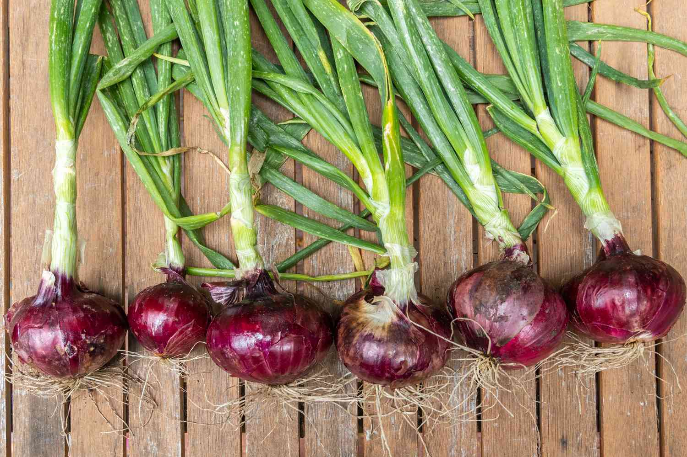

---Onions are a great for starters as they are the easiest to grow. They can be purchased in small bulb forms, where they can just be easily planted in the ground whenever you are ready. There are a great variety of onions one can grow. Such as the classic white onion, the simple yellow onion, or the stranger red onion. Onions are pretty resistant to most forms of weather, making it easy to keep them alive. Onions are one the earliest cultivated plants in human history, found throughout most of the world.

White Onion

Yellow Onion

Red Onion
Planting begins late spring/early summer or whenever the ground is workable, onions can also be planted in pots and raised beds.
Space individual bulbs 6" apart and the rows 1' apart in nutrient-rich, well drained soil with the approximate pH levels of 6.0 - 6.8.
Give your onions a headstart by providing a few inches of of aged compost or other decomposing organic matter.
Be sure to keep the top 1" soil moist as onions have such shallow roots or water whenever the top soil is dry.
For best results, apply a supply of continous-release plant food that is suitable for onions.
Onions can be harvested anytime whenever their size is suitable for you!
If you want to maximize onion growth, wait 80 days after planting bulbs or at the end of the growing season when their leaves have fallen over. For long time storage, pull and clean the onion, while keeping the green top. You will then let them dry out in the sun for a week, only when it is not raining or any wet condition. Afterwards, you now must cure them for storage. The onions are hanged or placed on a breathable platform in dry shade with plenty of airflow. Once all their green has completely dried up and is papery, you can now trim their tops. Now the onions are ready to be stored in a dry location in your home and can be served anytime.
More info